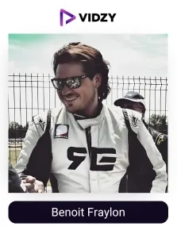
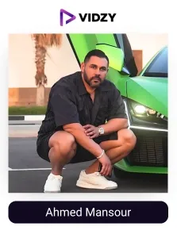
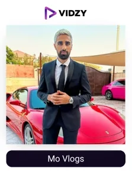
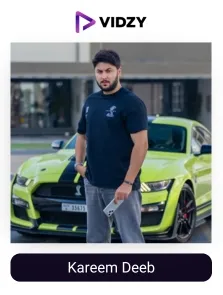
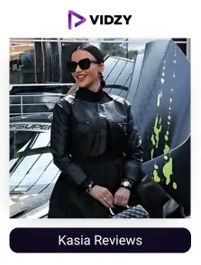
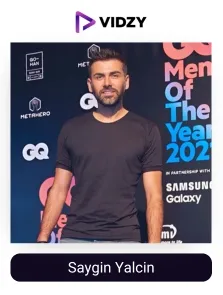
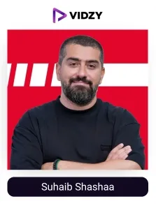
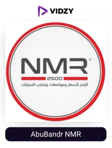
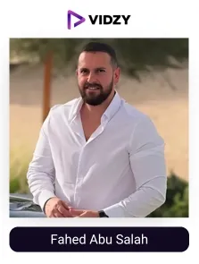

In the UAE, luxury is more than a lifestyle; nothing shows it better than the country’s passion and love for automobiles. Whether it's a Ferrari cruising past the Burj Khalifa or an electric car gliding through the streets of Dubai, automobiles here are all about style, power, and innovation.
The UAE is currently the second-largest automotive industry in the GCC. The market is witnessing significant growth with economic prosperity, consumer affluence, and technological innovations as the main key growth factors. On top of that, events like The Dubai International Motor Show are contributing to it by bringing the world's best automobile businesses and enthusiasts, and as a result, the automobile market valued at $7.06 billion is rapidly growing, expected to reach $25.16 billion by 2032.
Meanwhile, the UAE is also leading the way in positioning itself as a global leader in smart mobility and innovation. With the embrace of self-driving cars and electric vehicles, the government aims to transform 25% of its total transportation to autonomous modes by 2030.
At the core of this growth are Dubai’s top automobile influencers, who act as trusted sources for car reviews, feature breakdowns, and lifestyle integration. With detailed and easy-to-understand smart comparisons and real-world tips, they influence people’s buying decisions, encourage the adoption of government initiatives, and contribute to the overall growth of the industry.
Acknowledging their influence and potential, automobile brands in the UAE are teaming up with top automobile influencers in Dubai to enhance their visibility, build credibility, and ultimately accomplish their marketing goals.
As the leading UGC agency in Dubai, with years of experience in delivering highly impactful campaigns, we have researched and created a list of the top automobile UGC creators in Dubai for brands to connect with the right, trusted voices and achieve tangible results.
Top Automobile Influencers In Dubai
Contents
-

1. Benoit Fraylon
Channel: Benoit Fraylon
Followers: 5.6MEngagement Rate: 5.84%About The Influencers-
Benoit has a passion for cars, particularly racing cars. His blog is mostly focused on luxury cars and high-speed events as far as he is interested in speed and adventurous activities. With great content, he makes people focus on the cars and the adventures associated with them. He has made his social media accounts to focus on his passion for racing and high-performance cars, which has attracted fans of automobiles.
-

2. Ahmed Mansour
Channel: Ahmed Mansour
Followers: 2.5MEngagement Rate: 1.77%About The Influencers-
Ahmed is a well-known personality within the luxury car market in Dubai. He has a passion for luxury cars and has taken to his social media platform to advertise his premium car hire firm. They like him for his passion for cars, and he showcases some cool cars, which are rarely seen on the road. His posts are about cars, focusing on the prestige of owning such cars, and are aimed at car enthusiasts who love luxury.
-

3. Mo Vlogs
Channel: Mo Vlogs
Followers: 4.5MEngagement Rate: 5.55%About The Influencers-
Luxury cars and his lavish lifestyle are the main areas that Mo Vlogs is best known for. His entertaining posts feature different brands of classy cars, ranging from sports cars to luxury sedans and many others. Car lovers have flocked to Mo’s channel because he is entertaining, and many of his followers want to see the life of a car enthusiast in Dubai.
-

4. Kareem Deeb
Channel: Kareem Deeb
Followers: 1.6MEngagement Rate: 1.27%About The Influencers-
Kareem is an Egyptian who has established himself in Dubai through his stunt videos and high-octane car videos. His videos are about impressive vehicles and also provide the audience with information about the world of luxury cars. He also shares anecdotes and other interesting moments, which can be interesting to millions of his subscribers.
-

5. Kasia Reviews
Channel: Kasia Reviews
Followers: 3.2MEngagement Rate: 1.04%About The Influencers-
Kasia is a very committed car reviewer who loves Lambo vehicles, as she is called the ‘Lambo Girl’. Her elaborate car reviews and appealing car images draw many people interested in automobiles, therefore, she is among the leading automotive influencers in Dubai. She also educates people on the car industry and makes a special place for enthusiasts of car-related stuff.
-

6. Saygin Yalcin
Channel: Saygin Yalcin
Followers: 1.1MEngagement Rate: 2.71%About The Influencers-
Saygin Yalcin is a Dubai-based businessman and a car lover. His focus is on the car market, where he shares with his followers some behind-the-scenes of luxurious automobiles and the functioning of the automotive market in the Middle Eastern countries. Most of the time, his content seems to be business-related or his passion for luxury cars.
-

7. Suhaib Shashaa
Channel: Suhaib Shashaa
Followers: 1MEngagement Rate: 1.71%About The Influencers-
Suhaib Shashaa is the owner of ArabGT, a popular automotive media in the UAE. He also educates his viewers on supercars, giving his reviews on certain cars and information about the particular field of car manufacturing. His channel is very engaging for those people who are interested in automobiles and would like to know more detailed information about changes and updates.
-

8. Abdulaziz Masüd Ali oglü
Channel: Abdulaziz Masüd Ali oglü
Followers: 501KEngagement Rate: 1.12%About The Influencers-
Abdulaziz is a businessman and automobile personality operating from the Palm Jumeirah. His content focuses on his passion for exotic cars and prefers posts that generate a lot of engagement from readers within the car industry as well as car enthusiasts. Abdulaziz’s videos give the audience a sneak peek of how a typical luxury car enthusiast from Dubai lives.
-

9. AbuBandr NMR
Channel: AbuBandr NMR
Followers: 949KEngagement Rate: 1.10%About The Influencers-
AbuBandr is an automotive YouTuber who offers a breakdown of car services and the state of the car market in the UAE. Some of the topics he usually writes about include car pricing, details of certain models, and developments in the industry. He has built a loyal following because of his trustworthy and informative content in the rather saturated automotive industry in Dubai.
-

10. Fahed Abu Salah
Channel: Fahed Abu Salah
Followers: 673KEngagement Rate: 1.23%About The Influencers-
Fahad is a renowned automobile influencer in the UAE. He is also a well-known journalist @GearsMe. His content is basically on high-quality luxury cars. He shares car reviews, test drives, and cool features of different vehicles. His love for exquisite cars shines in his content, which hooks car enthusiasts to his handle.

Conclusion
Dubai’s automotive influencers showcase fast cars and luxury lifestyles, hence shaping trends, influencing consumer choices, and driving real engagement at scale. Their authentic connection with local and global audiences makes them vital partners for brands looking to elevate their presence.
Collaborating with these creators provides brands with increased visibility, credibility, Sales ROI, and access to a car-loving community that trusts their thoughts. An automobile brand in the UAE can launch a new model, boost test drive sign-ups, change consumer perceptions, and more! Automobile brands can improve their profile by utilising UGC strategies.
Vidzy, as the leading UGC agency in the UAE, helps automotive brands in Dubai to connect with the most influential and authentic creators to produce engaging and impactful content that truly resonates with auto enthusiasts and drives remarkable results.
Want to accelerate your brand’s reach through trusted voices in the automotive world? Let’s team up and drive the marketing strategies straight to success.